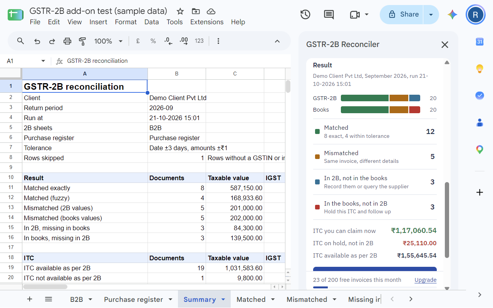
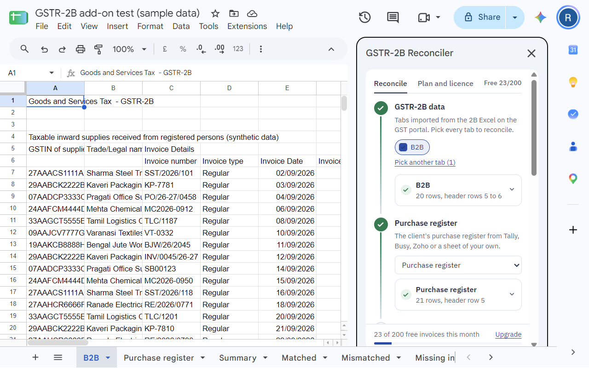
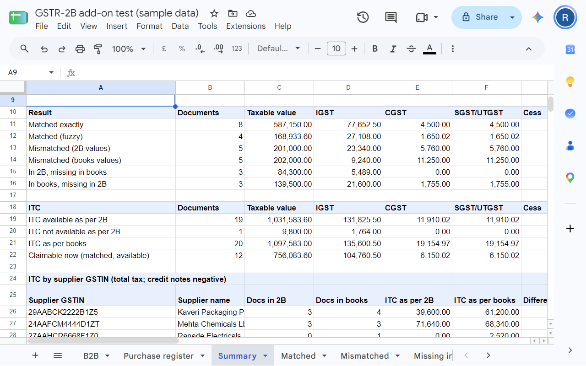
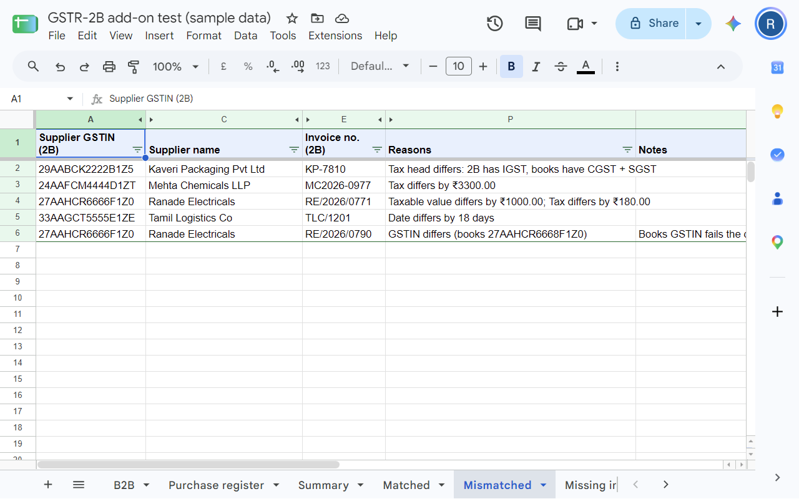
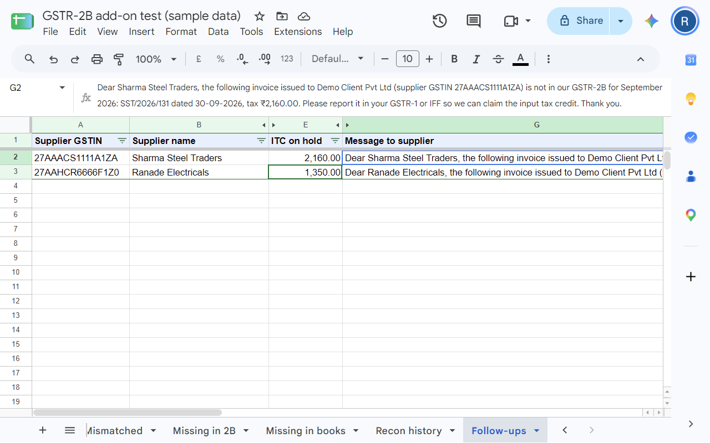

Google Sheets add-on for CAs and GST practitioners in India
Reconcile GSTR-2B with your Excel purchase register, in Google Sheets.
Still matching 2B and books with VLOOKUP? Import the GSTR-2B Excel from the GST portal and your purchase register into a Google Sheet, click Reconcile, and see matched, mismatched and missing invoices with claimable ITC by supplier.
Get it for Google Sheets, free See Pro
- Your Excel files, as they are. .xlsx or .csv from Tally, Busy, Zoho or your own format, imported into a Google Sheet.
- Nothing to install on Windows. No macros, no VBA, no VLOOKUP. It runs in the browser.
- Free for up to 200 invoices a month. Every matching rule and every result tab.

Coming from Excel?
The add-on does not run inside Excel. It works on your Excel files once they are imported into a Google Sheet. Here is what that means for the way you work today.
Do I have to change how I keep my purchase register?
No. Keep it in Excel, or export it from Tally, Busy or Zoho as you do now, with your own column names and order. The add-on finds the header row and suggests which column is which from the header text (Party GSTIN, Bill No, Supplier Invoice No and the like); you correct anything it missed in the sidebar. The mapping is saved in that client's spreadsheet, so next month is one click.
Does it work with my file?
Yes, if it has one row per supplier invoice with the supplier GSTIN, the supplier's invoice number, the invoice date and the taxable value. Add the IGST, CGST, SGST/UTGST and cess columns to get the ITC figures and to catch tax under the wrong head. Total rows and unregistered purchases can stay: rows without a GSTIN or an invoice number are skipped and listed at the end of the Summary. The GSTR-2B Excel is used exactly as the GST portal gives it.
How do my Excel files get in?
In a Google Sheet, choose File → Import → Upload, pick the .xlsx or .csv file and set Import location to Insert new sheet(s). The 2B arrives with each table on its own tab (B2B, B2B-CDNR and so on); the purchase register becomes one more tab. The add-on then reads those tabs. The files on your computer are not touched.
Is my data uploaded anywhere?
Importing copies the file's contents into a Google Sheet in your own Google Drive, under your Google account. The add-on has no server of its own: it runs inside Google Sheets, can read only the spreadsheet it is opened in, and sends nothing from your sheet anywhere. The single outside call is the Pro licence check, which carries the licence key and no spreadsheet data. Your data and permissions.
Do I need to install anything or enable macros?
No. There is nothing to install on Windows, no macro to enable and no VBA. The add-on is added to Google Sheets from the Google Workspace Marketplace and runs in the browser, on any computer. You need a Google account.
Can I take the result back to Excel?
Yes. The result tabs (Summary, Matched, Mismatched, Missing in 2B, Missing in books, Follow-ups, Recon history) hold plain values, not formulas. File → Download → Microsoft Excel (.xlsx) in Google Sheets saves the whole spreadsheet as an Excel file for your working papers.
Want to see it before you bring a client's file? Click "Try with sample data" in the sidebar. It adds two tabs of made-up invoices, and runs on them are not counted against the free plan.
What the add-on does
Everything a monthly 2B reconciliation needs, written as tabs in the client's own spreadsheet.
- Exact and fuzzy matching
- Matches on supplier GSTIN, invoice number, date and taxable value. Catches what macros miss:
INV/0045/26-27=inv-45-26-27, dates within 3 days, amounts within ₹1. Both tolerances are adjustable. - Mismatches with the reason
- The same invoice with a different value, date or tax, tax under the wrong head (IGST in 2B, CGST + SGST in the books), or a GSTIN typo in the books, each with the reason spelt out.
- Missing on either side
- Missing in 2B: hold the ITC and chase the supplier. Missing in books: check receipt, then record it. Duplicate entries in the books are flagged.
- ITC summary by supplier
- Head-wise totals (IGST, CGST, SGST/UTGST, cess), ITC as per 2B and as per books, claimable ITC and ITC at risk for every supplier GSTIN.
- Notes and amendments
- Reads the portal's B2B, B2BA, B2B-CDNR and B2B-CDNRA tabs, including the two- and three-row headers. Credit notes count negative in every ITC total.
- Remembers each client
- The column mapping is saved in each client's spreadsheet, so next month is one click. Every run is logged in a Recon history tab.
How it works
Import the 2B
Download the GSTR-2B Excel from the GST portal and import it into a Google Sheet (File → Import → Insert new sheet(s)).
Add the purchase register
Your Excel or CSV register from Tally, Busy, Zoho or your own format, imported the same way as another tab in the same spreadsheet.
Reconcile
Extensions → GSTR-2B Reconciler → Reconcile GSTR-2B. Confirm the columns in the sidebar and click Reconcile. The result tabs are written into the same spreadsheet.
The add-on writes seven tabs: Summary, Matched, Mismatched, Missing in 2B, Missing in books, Follow-ups and Recon history. Each run replaces the add-on's own result tabs; your source tabs are never changed.
New to 2B reconciliation? How to reconcile GSTR-2B with the purchase register in Google Sheets walks through downloading the 2B, exporting the register from Tally, Busy or Zoho, and what to do with every result tab.
What it looks like
Screenshots of the add-on in Google Sheets, taken on its built-in sample data (made-up suppliers and amounts). Click one to see it full size.
-

Pick the tabsThe imported 2B and the purchase register, with the header rows found for you. The portal's two-row header is read as it is. -

SummaryCounts and head-wise tax for every category, ITC as per 2B and as per books, claimable ITC, and ITC by supplier GSTIN. -

Mismatched, with the reasonThe same invoice with a different value, date, tax, tax head or GSTIN. Some columns are hidden in this shot so the reasons fit. -

Supplier follow-upsOne row per supplier whose invoices are missing in 2B, with the ITC on hold and a message ready to paste into email or WhatsApp.
Pricing
Free for a small practice. One yearly price when you need more.
Free
₹0
- Up to 200 invoices a month
- Every matching rule and every result tab
- Column mapping saved per client
- Re-running the same 2B in the same month is not counted again
Pro 14-day money-back
₹999 / year
- Unlimited invoices
- Everything in Free
- One licence key works in every spreadsheet you open with your Google account
- Email support
Payments are processed by Dodo Payments (merchant of record). You receive a licence key by email; paste it into Extensions → GSTR-2B Reconciler → Licence and plan.
How invoices are counted: each row of the result counts once. A matched or mismatched pair is one, and each unmatched invoice on either side is one. Credit and debit notes count like invoices. The count resets on the 1st of every month (Indian time). A run that would cross 200 is stopped before anything is written.
Your data and the permissions it asks for
Your client data stays in your spreadsheet. The add-on runs on Google's own Apps Script servers and has no server of its own. On first use Google asks you to allow three permissions:
| Permission | Why the add-on needs it |
|---|---|
View and manage spreadsheets that this application has been installed inspreadsheets.currentonly | To read the GSTR-2B and purchase-register tabs you pick and to write the result tabs, in the spreadsheet the add-on is opened in. It cannot open any other file in your Google Drive. |
Display and run third-party web content in prompts and sidebars inside Google applicationsscript.container.ui | To show the add-on's sidebar inside Google Sheets. |
Connect to an external servicescript.external_request | Only to activate and re-check a Pro licence key with Dodo Payments, our payment provider: once when you activate, then at most once a week, or when you click Check again. The request carries the licence key and a fixed product name, nothing from your spreadsheet. On the free plan this permission is never used. |
The add-on does not ask for your name, email address, contacts, Gmail or Drive. Full details are in the Privacy Policy.
Install
GSTR-2B Reconciler is free on the Google Workspace Marketplace. In any Google Sheet, open Extensions → Add-ons → Get add-ons, search for "GSTR-2B Reconciler" and click Install, or use the button below. Then open a spreadsheet and choose Extensions → GSTR-2B Reconciler → Reconcile GSTR-2B.
Tip: set File → Settings → Locale to India so dd-mm-yyyy dates read correctly, and untick "Convert text to numbers, dates, and formulas" when importing so invoice numbers like 00123 stay intact.
FAQ
Does my client data leave Google?
No. Invoices, GSTINs and amounts are read and written inside Google Sheets only. The single outside call is the Pro licence check, which sends your licence key to Dodo Payments and nothing else.
Can it see my other files?
No. It only has access to the spreadsheet it is opened in, and only while you use it there.
Does it log in to the GST portal or file anything?
No. You download the GSTR-2B yourself. The add-on never connects to the GST portal and never files, accepts or rejects anything in IMS.
Which 2B tabs does it reconcile?
B2B, B2BA, B2B-CDNR and B2B-CDNRA. ISD and IMPG have no supplier invoice to match, and ECO, B2B-DNR and the reversal and rejected tabs are not handled yet.
Is this affiliated with GSTN or the Government?
No. GSTR-2B Reconciler is an independent tool. It is not endorsed by or affiliated with the Goods and Services Tax Network, CBIC, the Government of India or Google.
Is the result final?
It is a working paper. Check the Mismatched and Missing tabs before you claim ITC or file a return; you remain responsible for the figures you file.
Support
Email support@creet.in with what you were doing and the exact message the sidebar showed. Pro buyers: include your order number. Please don't send client spreadsheets; if we need to see a file, we will ask for a copy with the client's details removed.